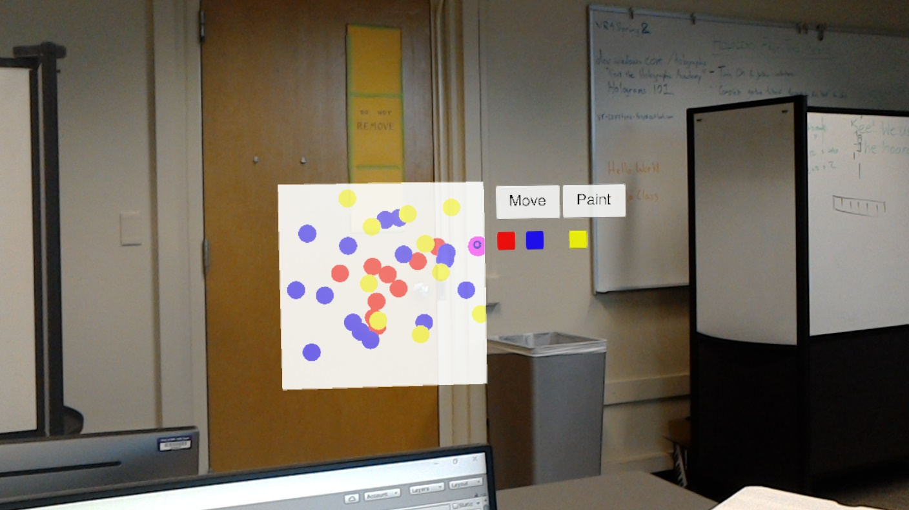

Intro
This week, the majority of our work was building the painting portion of our application. The primary goal was to be able to have a functioning basic demo of our application working by Wednesday, which was successfully delivered on time. For the remainder of this week, we plan to start work on networking and also improve the UX portion of our application.
Progress
As seen by the TAs during our 1 : 1, the current state of our application allows the user to freely transition between two modes, placement and drawing. Placement mode displays the room’s virtual mapping and allows users to click on any hologram to move it and then click on it again to place it. Drawing mode, on the other hand, is pretty self explanatory and allows the user to click on the whiteboard to paint. To transition between modes, the user clicks a button (either placement or drawing) which resides on the menu hologram.
So far our application allows very basic drawing and we plan to polish this experience some more as well as add more functionality on top of this.
Currently, our work for this week and next week is split up as such. Though it is pretty likely that two or more members will focus on the networking portion for next week.
Andy is currently working on hand movement and gesture detection to improve the drawing experience and also allow other functionality to be added in.
Panji is working on application networking, allowing shared states of the whiteboard for multiple Hololens devices.
Radu is working on adding more functionality to the menu hologram, allowing the user to do things such as selecting a brush size / color.
Thomas is working on more advanced features for the whiteboard such as scaling/extending the whiteboard.
Difficulties we encountered
For the past few days, we have been continually working on hand gesture detection. However, there have been many difficulties with this. This was mainly due to the Holograms 211 gesture tutorial not being very clear on how each piece of code works and interacts with each other as well as the methods responsible for gesture detection not having very helpful documentation. We have currently posted our problem to the Hololens forum and will follow up with a TA if this issue is not resolved within the next couple of days.
Plan for next week
By the end of next week, we hope to have a more polished experience for the user. This will include hand gesture detection, improved UI elements, and hopefully networking capabilities. The hand gesture detection should be resolved by end of this week with help from the forums or by trying out different things on our own. The UI elements will contain more whiteboard and painting brush functionality. The networking portion will likely support allowing 2 Hololens devices to simultaneously draw on a whiteboard.
Demo Pictures
Startup of application

Painting with different colors
After clicking "Move" Button
After moving the menu panel